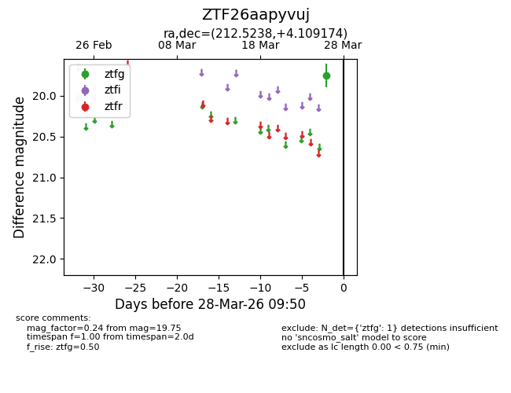
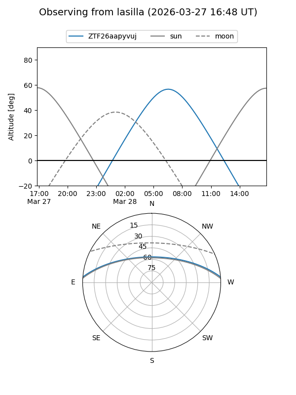
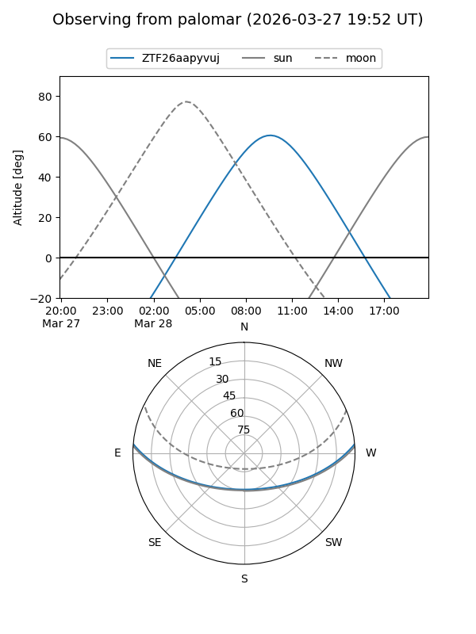

ZTF26aapyvuj
Target ZTF26aapyvuj at 2026-03-28 09:53
Aliases and brokers:
FINK: link
Lasair: link
ALeRCE: link
alt names
ZTF26aapyvuj (ztf,fink_ztf)
Coordinates:
equatorial (ra, dec) = 212.5238,+4.10917
equatorial (HMS+DMS) = 14:10:05.72,+04:06:33.03
galactic (l, b) = (345.5709,+60.29683)
Flags:
Photometry:
last ztfg=19.75
1 ztfg detections
Lightcurve

Visibility


Additional plots